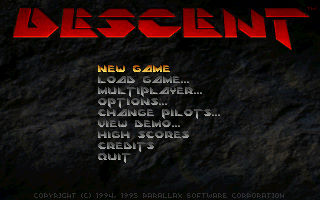
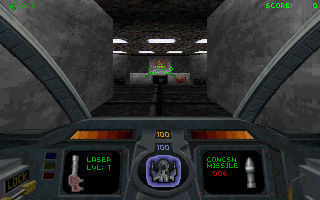

名稱：天旋地轉1 (Descent，英文版)
簡介：Parallax 1995年出品的第一人稱太空船射擊遊戲，由Interplay代理發行。1995年再
推出「世界關卡（Levels of the World）」資料片，1996推出整合資料片再加上額外
關卡的「週年紀念版（Anniversary Edition）」。1997年則收錄在「一二代終極合集
（The Definitive Collection）」 [待補]。


備註：本版為週年紀念版
保護：無
備註：安裝DOS版資料片，直接將光碟LEVELS內容拷貝到主程式的安裝目錄即可。
備註：週年紀念版安裝完只有主程式+20個新增關卡，資料片內容必須自行拷貝LEVELS目錄。
備註：一二代終極合集版主體內容和週年紀念版是完全相同的，只有內附的展示程式不同。
檔案：descent10.rar = 1.0版主程式（磁片版與光碟版內容相同，松崗代理版）
descent15.rar = 1.5版主程式+資料片